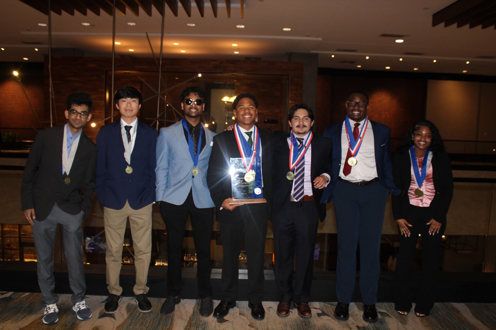

Louisville, Kentucky · 2026
A season worth
celebrating.
Competition, international recognition and the kind of chapter memories that make every hour of preparation worth it.
ICDC
2026
2026
The Kentucky chapter
We showed up.
We stood out.
UNC Charlotte members traveled to Louisville ready to compete, connect and represent Niner Nation. The chapter returned with medals, finalist recognition, an international second-place finish and a stronger team.
2ndInternational finish
10Gallery moments
∞Memories made
Conference gallery
The people behind the results.
Select any photo to view it larger.
Next chapter: Austin